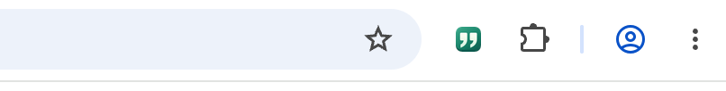
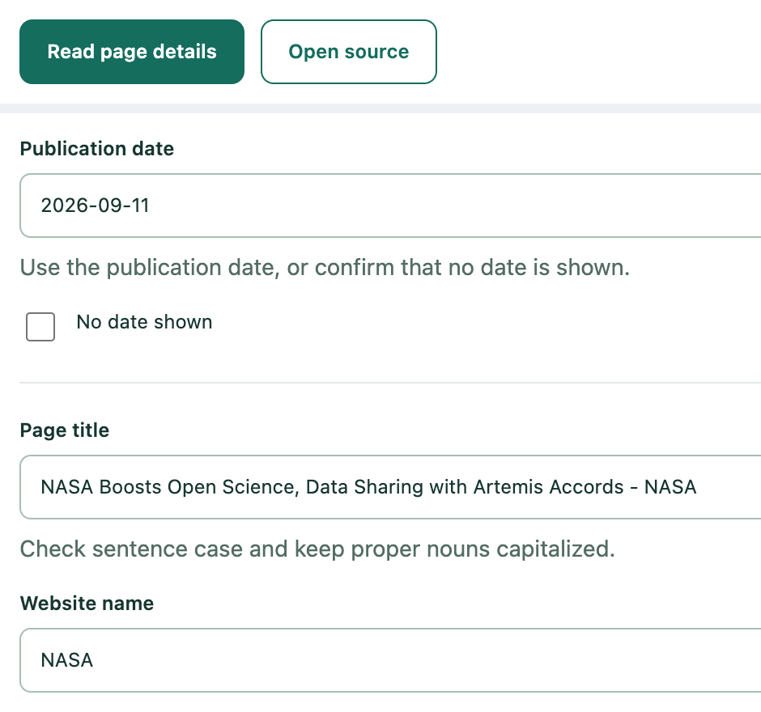

APA Website Citation Generator
Welcome to APA Website Citation Generator
Turn a web article into an APA 7 reference.
Already pinned? See how to use it.-
Pin the extension
Click Extensions in the Chrome toolbar, then click the pin beside APA Website Citation Generator.

-
Open the extension
Open the article you want to cite, then click APA Website Citation Generator on your Chrome toolbar.

Chrome screenshots
Create your first APA 7 reference
Show how to pin it-
Open the extension from the article
With the article open in Chrome, click APA Website Citation Generator on the toolbar or in Chrome’s Extensions menu.

-
Read the article details
In the workspace that opens, click Read page details. Compare the suggested author, date, title, website name, and URL with the article.

-
Check the fields and create the reference
Correct any fields that need editing. If the author appears as a single suggestion, fill in Family name and Given names. Select I checked the source details. Then click Create reference.

-
Copy the APA 7 reference
Click Copy reference to copy the reference to your clipboard.

After pasting the reference, apply italics where needed and add a hanging indent.